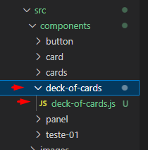
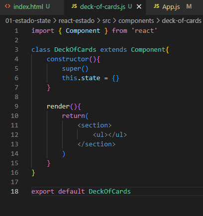
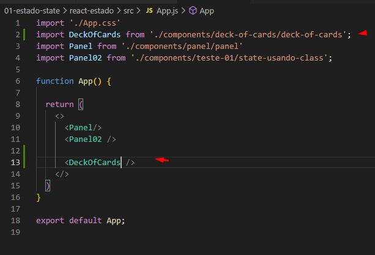
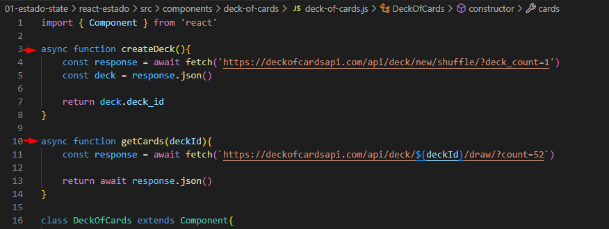
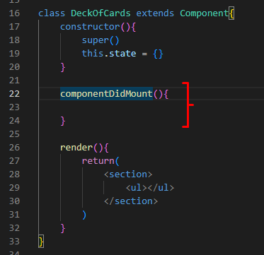
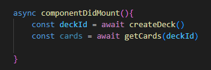
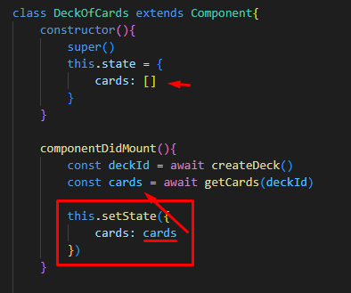
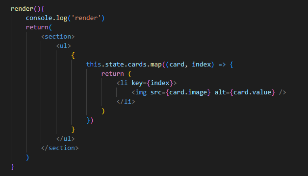
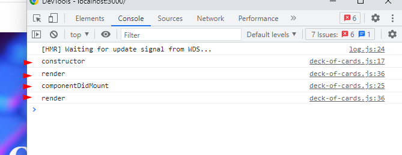

Lifecycle React na Prática
OBS: Vamos precisar atualizar o projeto anterior. Todas as atualizações de código ficarão salvas apenas nos prints dessa aula, estude com atenção.
Starting:
- Criando um novo componente (pasta + arquivo.js) deck-of-cards:

- Escrevendo o escopo do componente:

- Impotando e usando o componente:

- Fazendo a primeira requisição na API de cards. O ideal aqui seria criar uma pasta separada pro tratamento dos serviços js, mas como é só um exemplo vamos fazer tudo dentro do mesmo componente. Fazendo Requisição:

- Criando o método que vai pegar a lista de cartas e vai atualizar o meu state (ATENÇÃO PRO LUGAR ONDE O MÉTODO DEVE SER CHAMADO):

O componentDidMount(){} é chamado quando o componente for montado/apresentado na tela.
- Chamando as duas requisições, feitas com o fetch, dentro do componentDidMount(){}:

- Criando um array vazio para as cartas + mandando os dados atualizados (feitos pelos fetchs) pra dentro do mesmo state, cumprindo assim, uma atualização de estados pro meu componente:

- Apresentando tudo na tela:

1- Tudo entre chaves porque vai escrever código JS.
2- Fazer um map dos cards pra percorrer e criar um novo array.
2.2 - O map precisa de cada carta (card) e da posição de cada carta (index) por causa do Key=.
3 - Retornar um <li> (com o key) e com o conteúdo de cada item como sendo uma imagem (também com o key).
4 - O src= da img vai ser a 'card.image', a própria imagem de dentro do objeto.
5 - O alt também está dentro do objeto, é só uma string com o nome de cada carta.
Resumindo Tudo:
- Criando um componente "DeckOfCards"
- Inicializando o componente com um estado como sendo um objeto e dentro tem um array de cartas vazio
- Montando o componente com o "componentDidMount"
- Quando ele for montado, chama o "createDeck()", que é uma função e vai buscar um baralho da API e nos retornar o id desse baralho.
- Logo depois, ainda dentro do DidMount, chama o "getCards(deckId)" passando o "deckId" por parâmetro (Esse "deckId" é o ID do baralho da função de cima, é o ID do "createDeck()"). O getCards() retorna todas as informações das 52 cartas do baralho de cartas que foi gerado acima.
- Preenchendo o estado vazio do array 'cards: []' com as informações que vieram do getCards(). Crie um novo this.setState() para isso.
- Colocando tudo na tela. Primeiro temos uma section, com uma ul e dentro tem um código JS (as chaves {}).
- O código JS cria um novo array com o map que retorna uma lista de li's com a imagem das cartas lá dentro. OBS: Lembre-se do index key= pra todos os filhos do map.
E esse é o ciclo de vida do componente:
1 - o Constructor seta os estados iniciais do componente
2 - o Reder manda renderizar o componente no DOM
3 - o componentDidMount atualiza os estados do componente
4 - o Render renderiza o componente de novo mas com as informações todas atualizadas
